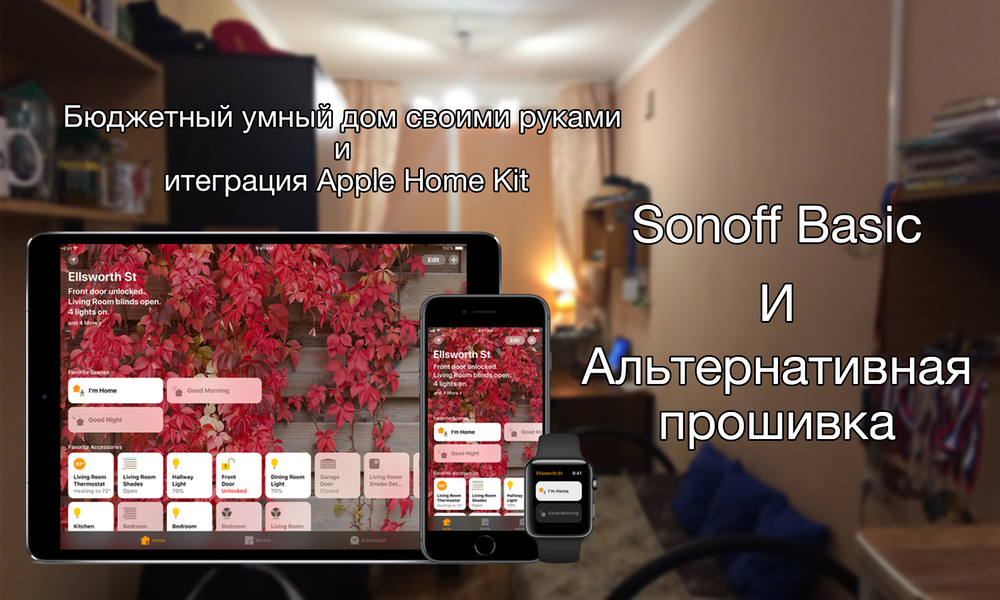
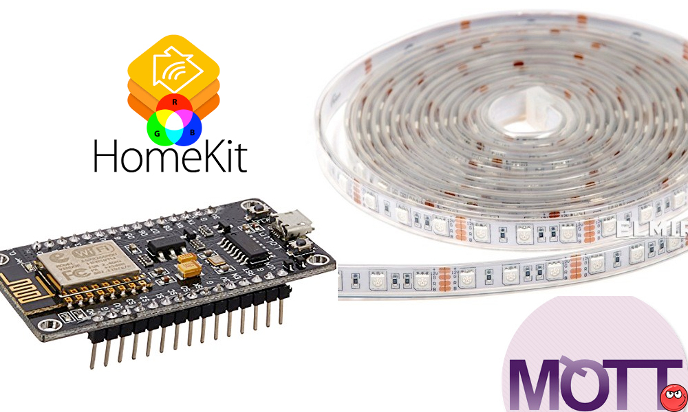
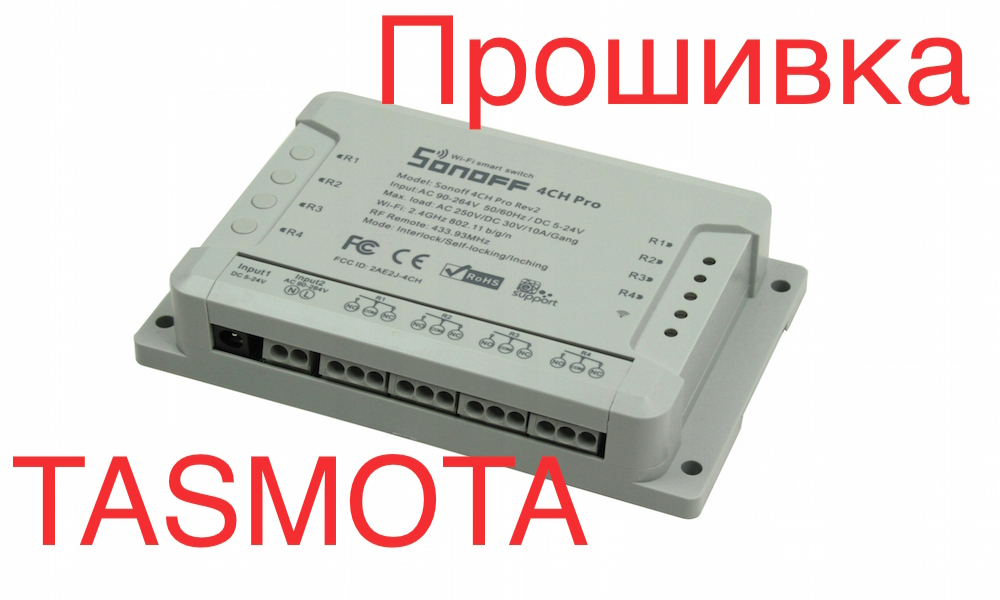
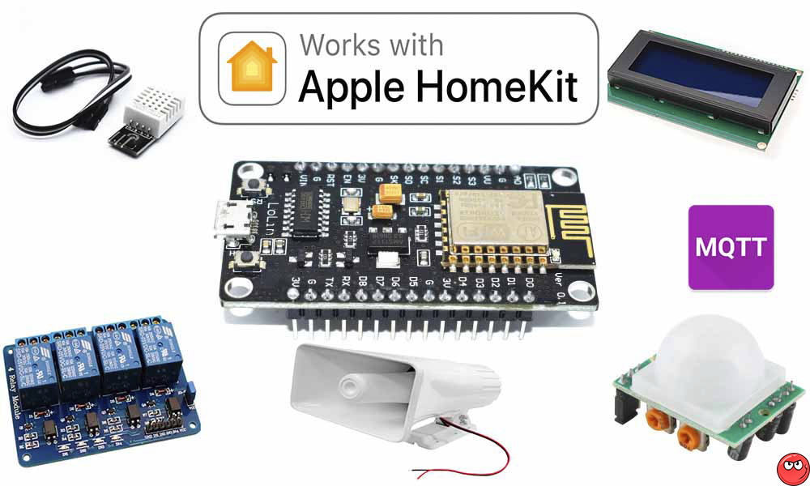
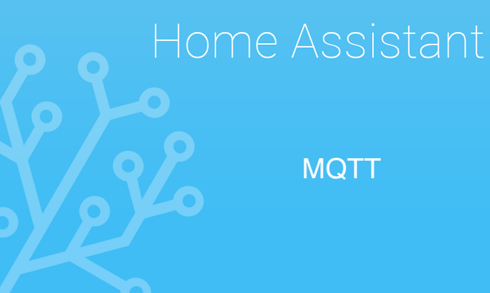

Что такое Tasmota? И какие устройства можно на ней собрать.
04-02-2019
Давно хотел написать эту статью, точнее собрать из кусочков, т.к. на портале sprut.ai практически все это есть, и нужен был гайд где и что можно найти и в какой последовательности использовать чтобы залить прошивку и прокинуть устройство в HomeKit через HomeBridge.
Что такое Tasmota?
По словам разработчика:
Tasmota - это альтернативная прошивка для устройств на базе ESP8266, таких, как iTead Sonoff 4CH (R2)Sonoff с веб - интерфейсом, таймером, обновления прошивки «Over The Air» (OTA), имеется поддержка датчиков, управление осуществляется по HTTP, MQTT и KNX для использования в системах Smart Home. Написано для Arduino IDE и PlatformIO.
Поддерживаемы устройства
iTead Sonoff Basic
iTead Sonoff RFiTead Sonoff SViTead Sonoff TH10 / TH16 с датчиком температурыiTead Sonoff Dual (R2)iTead Sonoff Pow с мониторингом энергииiTead Sonoff Pow R2 с мониторингом энергииiTead Sonoff 4CH (R2)И это только малая часть того что поддерживает эта прошивка, с полным списком можно ознакомиться тут.
Итак, начнем.
Подготовка устройства
Первым делом нужно разобрать устройство, если это Sonoff и подпаять к нему коннектор для подключения TTL-конвертера. Подробно про все это можно прочитать в этой статье:

Статья принадлежит автору: Вячеслав Фетисов (Ziracul)
Подготавливаем и заливаем прошивку
Для прошивок Tasmota, необходимо собрать собственную прошивку, со своим SSID и паролем Wi-Fi. Как это сделать можно посмотреть в нескольких статьях:


Здесь же можно прочитать и как прошить наш Sonoff.
Что такое MQTT?
Тут тоже повторятся нет смысла, все уже было опубликовано нашим автором: Виталий Никольский (bigmanekb)
Установка MQTT брокера
Для установки MQTT брокера воспользуемся вот этими статьями в первой установка брокера без авторизации, во втором с авторизацией, выбор за вами:

Статья принадлежит автору: Батюшин Дмитрий (ReD)
Статья принадлежит автору: Александр Жабунин (OXOTH1K)

После прошивки мы получили работающее устройство на прошивки Tasmota. Установили MQTT брокера, теперь расскажу как добавить его в Apple HomeKit через HomeBridge.
Sonoff Basic, Sonoff S20 - одинарное реле
Первым делом нужно установить плагин, подключаемся по SSH к нашему предустановленному HomeBridge. Далее вводим команду установки плагина:
sudo npm install -g homebridge-mqtt-switch-tasmota
Настройка плагина. Открываем редактор конфига HomeBridge и добавляем в секцию accessories, следующие строки:
{ "accessory": "mqtt-switch-tasmota", "name": "Relay1", "url": "mqtt://MQTT–BROKER-ADDRESS", "username": "MQTT USER NAME", "password": "MQTT PASSWORD", "topics": { "statusGet": "stat/sonoff/POWER", "statusSet": "cmnd/sonoff/POWER" } }
Sonoff Dual, Sonoff 3CH, Sonoff 4CH
Приведу пример Sonoff Dual, Sonoff 3CH, Sonoff 4CH, тут все тоже самое, как и с одинарным реле, отличие только в конфиге.
{ "accessory": "mqtt-switch-tasmota", "name": "Relay1", "url": "mqtt://MQTT–BROKER-ADDRESS", "username": "MQTT USER NAME", "password": "MQTT PASSWORD", "topics": { "statusGet": "stat/sonoff/POWER1", "statusSet": "cmnd/sonoff/POWER1" } }, { "accessory": "mqtt-switch-tasmota", "name": "Relay2", "url": "mqtt://MQTT–BROKER-ADDRESS", "username": "MQTT USER NAME", "password": "MQTT PASSWORD", "topics": { "statusGet": "stat/sonoff/POWER2", "statusSet": "cmnd/sonoff/POWER2" } }, { "accessory": "mqtt-switch-tasmota", "name": "Relay3", "url": "mqtt://MQTT–BROKER-ADDRESS", "username": "MQTT USER NAME", "password": "MQTT PASSWORD", "topics": { "statusGet": "stat/sonoff/POWER3", "statusSet": "cmnd/sonoff/POWER3" } }, { "accessory": "mqtt-switch-tasmota", "name": "Relay4", "url": "mqtt://MQTT–BROKER-ADDRESS", "username": "MQTT USER NAME", "password": "MQTT PASSWORD", "topics": { "statusGet": "stat/sonoff/POWER4", "statusSet": "cmnd/sonoff/POWER4" } }
Sonoff Basic - температура и влажность
Как и в прошлом примере, первое что необходимо сделать это установить плагин, подключаемся по SSH к нашему предустановленному HomeBridge. И вводим команду установки плагина:
sudo npm install -g homebridge-mqtt-temperature-tasmota homebridge-mqtt-humidity-tasmota
Настраиваем плагин. Открываем редактор конфига HomeBridge и добавляем в секцию accessories, следующие строки:
{ "accessory": "mqtt-temperature-tasmota", "name": "NAME OF THIS ACCESSORY", "url": "mqtt://MQTT-ADDRESS", "username": "MQTT USER NAME", "password": "MQTT PASSWORD", "topic": "tele/sonoff/SENSOR" }, { "accessory": "mqtt-humidity-tasmota", "name": "NAME OF THIS ACCESSORY", "url": "mqtt://MQTT-ADDRESS", "username": "MQTT USER NAME", "password": "MQTT PASSWORD", "topic": "tele/sonoff/SENSOR" }
где, как и в предыдущем примере:
url - адрес нашего MQTT брокера, например mqtt://192.168.88.5
username - имя пользователя MQTT брокера (если устанавливали брокер по моей статье, удаляем эту строку)
password - пароль MQTT брокера (если устанавливали брокер по моей статье, удаляем эту строку)
Magic Home Led Strip на прошивке Tasmota
Повторяться не буду, приведу ссылку на статью.
Статья принадлежит автору: Батюшин Дмитрий (ReD)
Итак, у нас получился небольшой гайд по альтернативной прошивке Tasmota.
Хочу заметить что использования Sonoff не обязательно, т.к. все можно собрать на ESP8266, например на плате nodeMCU, Wemos...
Второе замечание, Tasmota отлично работает не только с HomeBridge, но и с Home Assistant, по просьбе могу прикрепить конфиги.
Напиши в комментариях какие устройства на этой прошивке используешь ты, а какие хочешь реализовать в будущем. Не забывай подписываться на авторов которых читаешь.
0 0 16 9
04-02-2019
Очень полезно! Спасибо!
Ответить
1 0
04-02-2019
У меня sonoff basic на tasmota, в связке с HA по MQTT, работает безотказно! Ещё энергомонитор на базе nodemcu и pzem-004t, тоже по MQTT данные в HA передает (Uptime на данный момент 14 дней, зависаний, пропусков данных, обрывов wifi небыло ниразу)